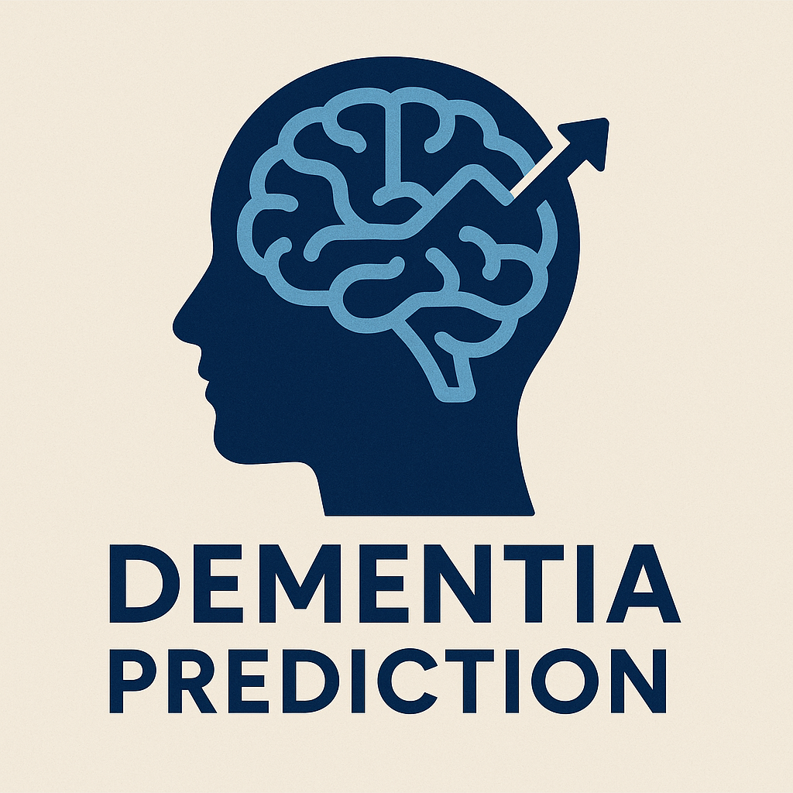
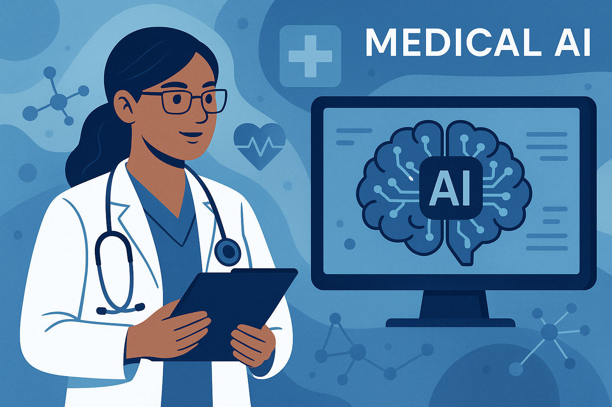

Developed a machine learning model to predict dementia progression using Random Forest and Logistic Regression, with SHAP for model interpretability. Deployed via Flask API with a user-friendly dashboard for real-time predictions.

Built an AI system for medical image interpretation and diagnostics using Microsoft Azure AI services. Presented at the Microsoft AI For Good Hackathon, showcasing potential to enhance healthcare accessibility in underserved communities.
Developed a full-stack business intelligence dashboard for a retail client, integrating real-time sales data with predictive analytics to optimize inventory management and marketing strategies.
Created a RESTful API for text analysis and processing, supporting sentiment analysis, entity recognition, and text summarization for client applications in customer service automation.